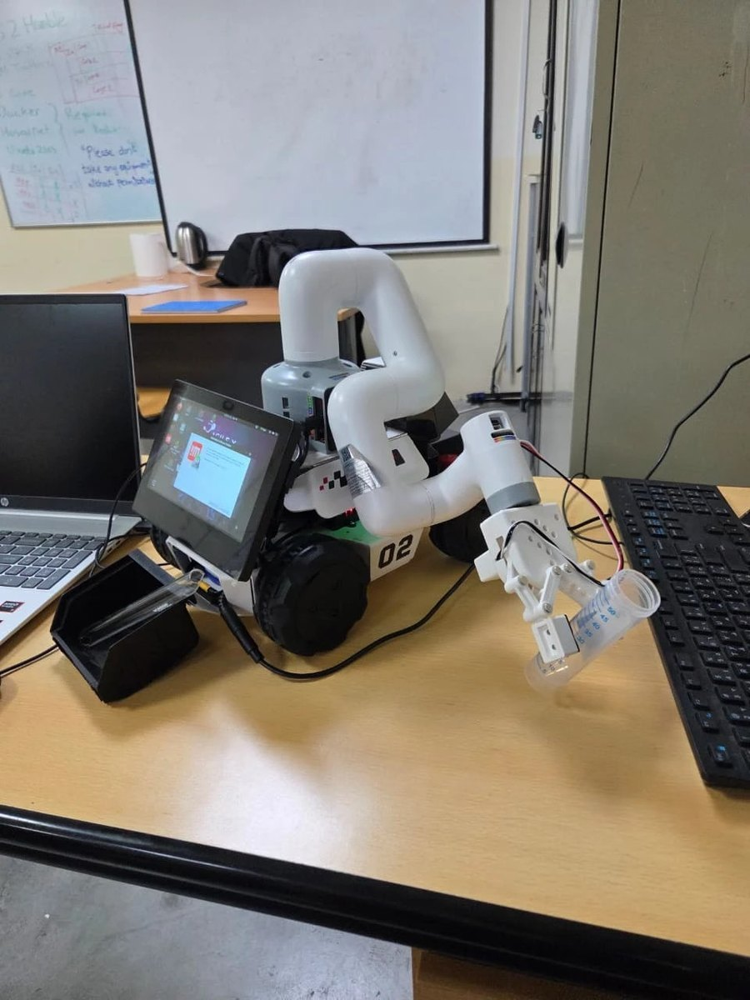
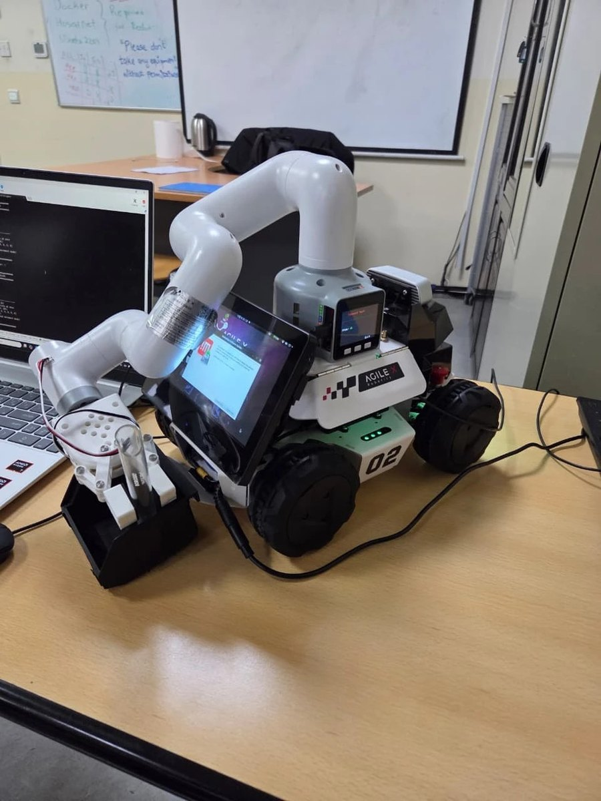

01 The problem
The esteros of Manila's Pasig River basin carry industrial and household waste into Manila Bay, and contaminated floodwater spreads leptospirosis. Fixed sensors can't move. Manual sampling is risky and lab results take weeks.
BITS Pilani, Dubai Campus · Robotics prototype
ba·ya·ni — Tagalog for hero
A robot that patrols urban creeks, spots pollution with on-board AI, pins each hotspot on a map and takes a water sample. No lab queue. No human in the loop.

The esteros of Manila's Pasig River basin carry industrial and household waste into Manila Bay, and contaminated floodwater spreads leptospirosis. Fixed sensors can't move. Manual sampling is risky and lab results take weeks.
Bayani-6 learns what clean water looks like, then flags anything that doesn't fit: oil sheens, sludge, foam, weed mats. It stops, records its exact SLAM position and dips its arm to collect a sample into its on-board rack.
Every hotspot is written to a CSV and turned into a contamination heatmap, so city teams can trace pollution back to the pipe it came from instead of guessing.
Why the Philippines
Bayani-6 is built for Metro Manila's creeks: narrow, polluted and flood-prone, with families living right along the banks. These are documented events from the last few years.
The tanker MT Princess Empress sank carrying 800,000 litres of industrial oil. More than 99,000 people in Oriental Mindoro were affected.
source ↗MT Terranova capsized in Manila Bay during Typhoon Carina carrying about 1.4 million litres of industrial fuel oil.
source ↗After the July floods, leptospirosis cases jumped from 251 to 1,184 in two weeks. Metro Manila recorded the most deaths.
source ↗The Pasig was declared biologically dead around 1990. In 2008 the Supreme Court ordered government agencies to clean up Manila Bay, work that now reaches the esteros.
source ↗Bayani means hero. This robot does the dangerous part, so the people who live by the water don't have to.
| ID | X (m) | Y (m) | Score | Appearance | Sample |
|---|
No hotspots yet. Press Run to start the patrol.
Browser simulation of the Bayani-6 mission loop. Map, telemetry and camera feed are generated live for demonstration.
System architecture · ROS 2 Humble
Everything runs on the robot's Jetson. No cloud, no remote operator. These are the nodes and topics the live mission simulates.
Nav2 drives a fixed waypoint route along the creek bank while Cartographer keeps a live LiDAR map.
The Orbbec RGB-D camera streams the water surface straight into the Jetson.
A patch-based anomaly model, trained on board from 60 s of clean water, scores every frame from 0 to 1.
Score above the trigger (0.8 by default) and not a known hotspot? The master node pauses Nav2.
The robot's exact (X, Y) comes from the SLAM transform tree via tf2.
The myCobot picks a tube from the rack, dips it at the water line for 3 s and puts it back.
The hotspot is appended to hotspots.csv, the heatmap updates and the patrol resumes.
The camera faces forward
The Orbbec camera is fixed to the front of the robot, and the water is beside the path. Bayani-6 handles this in software, using the LIMO's motion modes.
With mecanum wheels the LIMO can drive sideways. The body, and its camera, stay pointed at the water for the whole patrol.
Works with the standard wheels. Waypoints keep the robot's nose turned 30–45° toward the creek, so the wide camera sees the water ahead and to the side.
Every few metres the robot spins on the spot to face the water (differential mode turns in place), checks the surface, then turns back and drives on.
Sample handling
Prototype limits: the arm reaches 280 mm, so the demo arena keeps the water within about 20 cm of the bank edge. Real esteros have high walls, so the next version lowers a weighted tube or a small pump line. The LIMO has no published waterproof rating, so the tubes sit well away from the electronics.
Pollution doesn't come in tidy labelled classes. A slick can be rainbow or grey; foam, sludge and weeds change with light and season. Instead of training on thousands of labelled pictures of dirt, Bayani-6 learns one thing really well, on the robot itself: what normal water looks like. Anything that doesn't fit gets a high score.

Unmodified off-the-shelf platform
No custom hardware. Every capability in Bayani-6 is software running on a stock robot, which keeps it cheap to copy for other cities.
| Feature | Spec | Why it matters here |
|---|---|---|
| 4 motion modes | Ackermann · differential · mecanum · tracked | Tracks for muddy banks (up to 45° climb), mecanum to crab-walk with the camera on the water, differential to spin in place. |
| Depth camera | Orbbec RGB-D | Colour to spot pollution, depth to judge distance to the water and the bank edge. |
| LiDAR + SLAM | EAI T-mini Pro · Cartographer / Gmapping / RTAB-Map | Builds the map, so every hotspot gets exact (X, Y) coordinates. |
| IMU | High-precision IMU | Steadier position tracking on bumpy ground. |
| On-board AI | NVIDIA Jetson Orin Nano | The model trains and runs on the robot. No internet needed in flood zones. |
| Robotic arm | myCobot 280 · 6-DoF · 280 mm · 250 g · ±0.5 mm | Precise, repeatable dip sampling into the tube rack. |
| Software | ROS 1/2 · Python & C++ SDK · DWA/TEB nav · simulation | Standard, open tools that are easy to extend. |
| Size & runtime | 322 × 220 × 251 mm · 5.6 kg · 2.5 h | Fits narrow estero walkways, one person can carry it, covers a full patrol shift. |
Specifications from AgileX Robotics. Mecanum wheels and tracks are optional accessories.